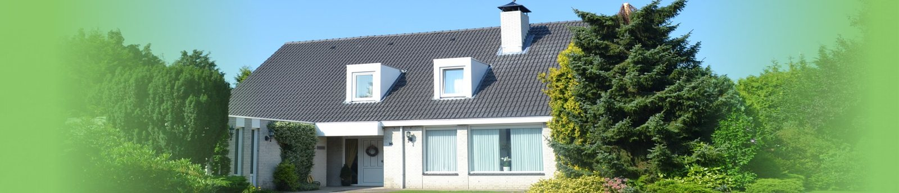
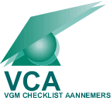
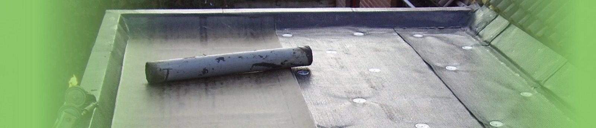
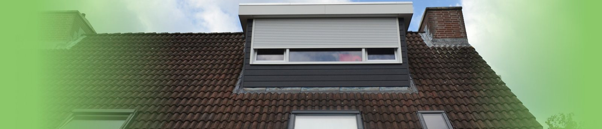
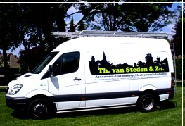

Sinds 1990, Boschdijk Eindhoven
Het dak lekt. De meterkast valt uit. Wij komen.
Van Steden & Zn is aannemer, dakdekker en elektra-installateur in één bedrijf. De vakmensen zitten in eigen huis, dus de werkzaamheden sluiten op elkaar aan en er valt weinig stil.
Ook als u nog geen klant bij ons bent.

Dag en nacht
Wanneer belt u ons?
Het hele huis, dag en nacht. Een van de drie hieronder, of iets daartussen.
Moet de verzekering erbij? Onze contacten met de verzekeringsmaatschappijen zijn goed.
- Lekkage in uw dak
- Lekkage in de waterleiding
- Storing in de meterkast
Vier kernactiviteiten
Eén bedrijf, vier afdelingen
Electro-installatie
Met technisch geschoolde medewerkers.
Dakdekkers
Vakmensen die snel en zeker werken.
Aannemers
Voor de grotere werkzaamheden, met VCA-certificaat.
Klus
Super snel en vakkundig.

Alle vier de afdelingen werken onder het VCA-certificaat. VCA staat voor VGM Checklist Aannemers, waarbij VGM staat voor Veiligheid, Gezondheid en Milieu.
Dakwerken
Alle werkzaamheden aan uw dak
Een dak staat constant bloot aan de weersinvloeden. Wij voeren alle voorkomende onderhoudswerkzaamheden uit die een dak nodig heeft.
- Bitumen dakbedekking
- EPDM
- Pannendaken
- Zinken goten
- Dakkapellen
- Dakramen
- Lichtkoepels en lichtstraten
- Solar tubes
- Schoorstenen
- Isolatie


Ook uw schoorsteen heeft onderhoud nodig. De meeste mensen doen niets tot er een lekkage is, en dan is de schade vaak vele malen groter.
Totaalpakket
Verbouwen zonder dat het blijft liggen
Deskundigheid en vakmanschap zitten in eigen huis. Wij zorgen dat de afzonderlijke werkzaamheden goed op elkaar aansluiten, zodat er weinig of geen stagnatie optreedt, bij normale werkomstandigheden.
- Dakwerken
- Metselwerken
- Sanitair
- Loodgieterwerken
- Zinken goten
- Stukadoorswerken
- Timmerwerken
- Tegelwerken
- Elektra
- Bribus-keukens en keukenapparatuur
Ook kozijnen en glas, rolluiken en verbouwingen.
Portfolio
Voor wie wij werken
Particulieren, vastgoedbeheerders en horeca in Eindhoven en omgeving.

- (Nood)reparaties bij vele particulieren na schades, met afwikkeling bij de verzekeringsmaatschappij
- Onderhoud van de gehele woning, inclusief 24 uursdienst, voor een verhuur-beheergroep
- Alle onderhoudswerkzaamheden voor een hotelketen in Eindhoven
- 24 uursdienst bij calamiteiten voor een hotel in de binnenstad van Eindhoven
- Onderhoud en uitbreiding van de electra voor een eetcafé, met 24 uursdienst
- Onderhoud van diverse panden in Eindhoven en omgeving voor een vastgoedbeheerder
- Uitbreidingen volgens de nieuwste veiligheidsnormen bij vele particulieren
Werkgebied
Regio Brabant Zuid-Oost, en alle gemeenten rond Eindhoven.
- Eindhoven
- Helmond
- Deurne
- Cranendonck
- Son
- Breugel
- Best
- Oirschot
- Veldhoven
- Leende
- Heeze
- Asten
- Bergeijk
- Valkenswaard
- Waalre
- Geldrop
- Mierlo
- Bakel
- Laarbeek
- Bladel
- Nuenen
Bel, ook midden in de nacht.
040-2622311- Adres
- Boschdijk 926
5627 AC Eindhoven - Telefoon
- 040-2622311
- Fax
- 040-2622274
- K.v.K.
- 17145403